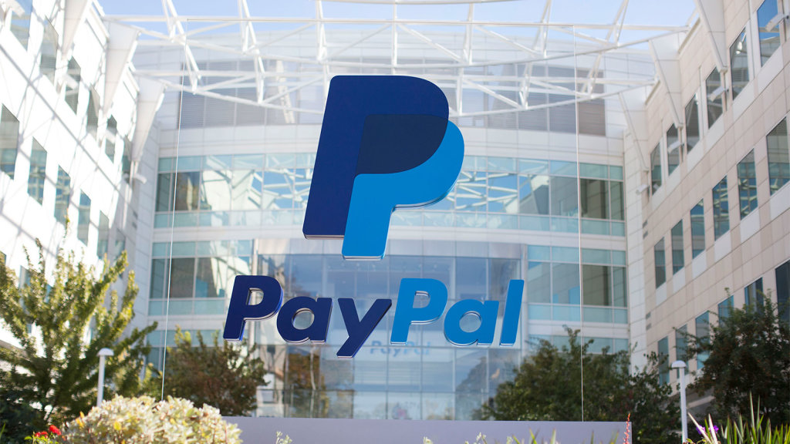
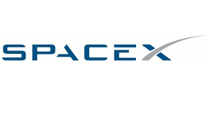

Elon Musk the person who is changing the world

Elon Musk was born on the 28th of June 1971 in Pretoria, South Africa, from the Canadian Maye Haldeman and the South African Errol Musk. Today he is considered one of the brightest minds of the 21st century; his business projects, Tesla and SpaceX show he is a skilled businessman as well as his vision of the future, the vision of the man who is considered one of the most influential young billionaires on the planet by Forbes magazine. His companies and many of his ideas, considered almost impossible to carry out, brought him to the big screen: it’s quite easy to find analogies with the character of Iron Man, inspired by the life of the South African inventor, naturalized American citizen.
Where did he came from
Elon Musk shows a great interest in programming from a very young age, he creates his first program at the age of 10, using Basic, one of the first softwares used by anyone who grew up in the 80’s; at the age of 12 he sells his first video game: Blastar. A sort of Space Invaders, where a spaceship destroys enemy spacecraft using hydrogen bombs.
After the divorce of his parents, Musk spends his youth in South Africa with his father; in 1989 he moves to Canada and attends Queen University, and ends his studies in the United States at Pennsylvania University where he earns degrees in physics and economics. He wins a scholarship at Stanford University, but choses San Francisco, the future birthplace of Silicon Valley. It is the very beginning of the world wide web, the internet. Search engines like Yahoo! and Netscape were born during those years, and the first bits started moving on the web. Here comes his first intuition: creating a list of businesses located in a digital map that would then be sold to editors. He founded the Global link information network with his brother Kimbal, a start up company that would then be renamed Zip2 after the New York Times and the Chicago Tribune decided to buy the service. Compaq saw the potential in this idea and decides to buy Zip2 for 307 million dollars and 34 million in stock options in 1999. This is Elon Musk’s first great success in the business world.
The formation of Paypal

But Elon Musk’s great step forward comes from online financial services, especially because of the effect his creation will have on our everyday lives. He co-founds X.com in 1999, a sort of online bank that would soon become Paypal, one of the most used and famous online payment methods in the world. The platform works perfectly, so much so that Ebay decides to buy it in 2002. Paypal closed the fourth trimester of 2016 with a 367 million dollar profit, a 26 per cent increase from the previous year.
SpaceX and Tesla
